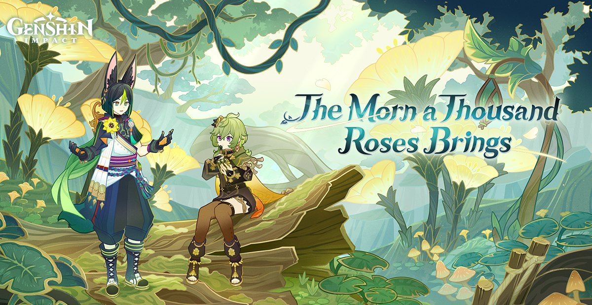
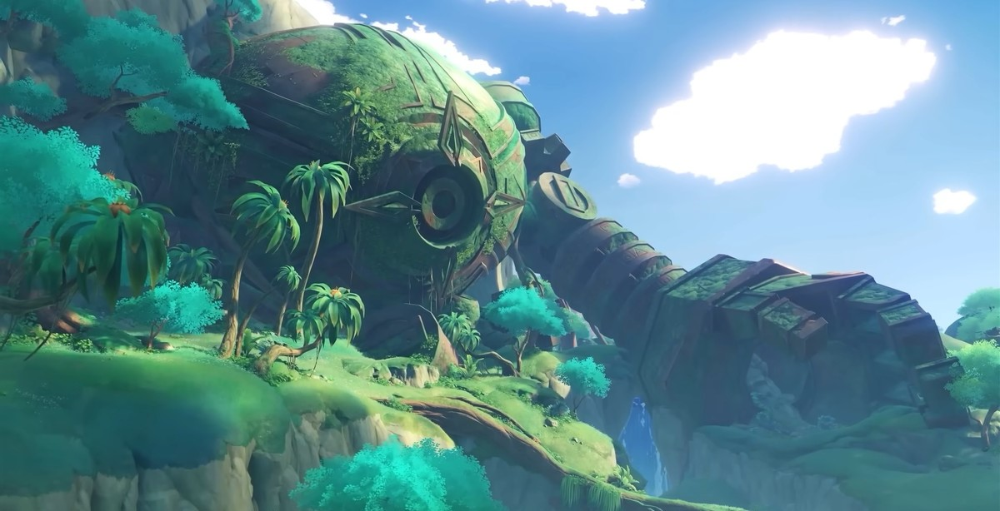
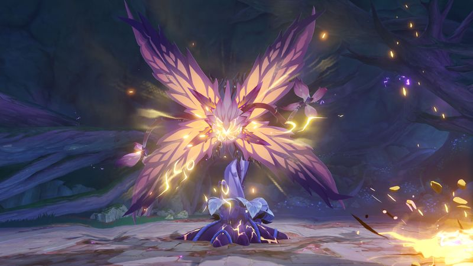
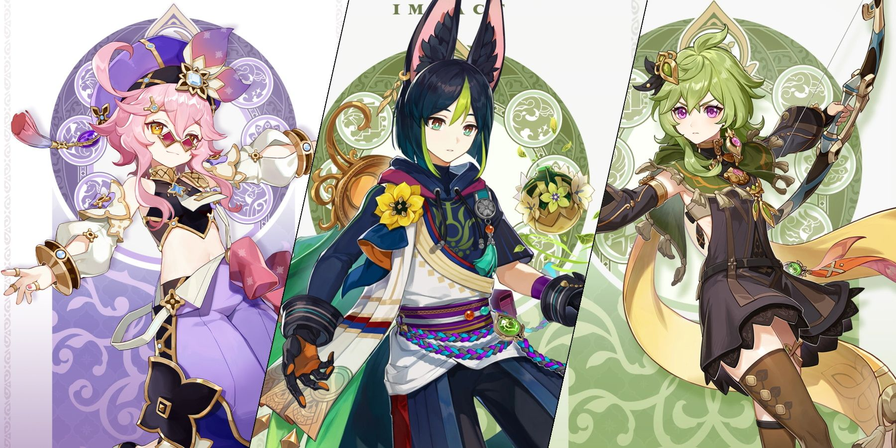

Update Genshin Impact versi 3.0 : Tighnari jadi karakter pembuka region Sumeru

Konten update Genshin Impact versi 3.0
WIlayah baru: Sumeru

Dikenal sebagai bangsa kebijaksanaan, kota Sumeru juga memiliki lembaga ternama dan bersejarah, yaitu Akademiya, yang didirikan oleh para pelajar Archon Dendro sebelumnya, Greater Lord Rukkhadevata.
Seiring dengan naiknya Lesser Lord Kusanali sebagai Archon Dendro saat ini dan menjadi Archon termuda di The Seven sejak 500 tahun terakhir, Akademiya juga berkuasa sebagai pemerintah bangsa Sumeru, serta memperlakukan pengetahuan sebagai sumber daya yang harus dikelola dengan ketat.
Element baru : Dendro

Dalam pertempuran, reaksi Bloom dan Catalyze dapat berkembang menjadi reaksi lanjutan. Saat elemen Dendro bersentuhan dengan elemen Hydro, reaksi Bloom akan memunculkan satu atau lebih Dendro Core, yang akan meledak dan mengakibatkan Dendro DMG setelah beberapa saat.
Jika Dendro Core bersentuhan dengan elemen Pyro atau Electro sebelum meledak, maka akan terpicu reaksi Burgeon yang meningkatkan Dendro DMG Area, atau reaksi Hyperbloom yang mengubah Dendro Core menjadi Sprawling Shot yang akan mengejar musuh terdekat.
Sedangkan reaksi Catalyze, yang dipicu oleh elemen Dendro dan Electro, dapat mengubah status targetnya menjadi Quicken, meningkatkan DMG elemen yang diterima dari serangan Dendro atau Electro berikutnya sesuai dengan reaksi Spread atau Aggravate yang terpicu.
Berbagai monster baru

Status, pola serangan, dan item yang bisa didapat dari monster bisa berubah sesuai dengan statusnya, sedangkan tanaman dan jamur tertentu dapat memberikan efek yang berguna.
Di sisi lain, daerah tropis yang lembap menyediakan habitat yang cocok bagi beraneka ragam hewan, bahkan jamur-jamur telah mengembangkan suatu spesies unik, yang disebut Fungus, untuk melindungi habitat mereka.
Musuh Boss baru bernama Jadeplume Terrorshroom adalah salah satu spesies Fungus yang memiliki insting hewani kuat dan agresif serta teritorial. Musuh Boss baru lainnya, Electro Regisvine, juga menunggu Traveler di kedalaman hutan.
Karakter baru : tighnari, collei, dan dori

Karakter 5★ Tighnari adalah seorang Pelindung Hutan dan pelajar muda yang penuh semangat. Charged Attack dan Elemental Burst miliknya dapat mengakibatkan Dendro DMG beberapa kali, yang membuat Tighnari bisa jadi pilihan untuk memicu rantaian reaksi elemen Dendro.
Kemudian ada murid Tighnari, Collei, yang jadi tamabahan karakter 4★ berikutnya. Kabar baiknya, karakter ini bisa didapat secara gratis dalam waktu terbatas dengan menyelesaikan event v3.0 “Graven Innocence”.
Selain Karakter Dendro, karakter support 4★ dengan elemen Electro, Dori, juga akan bergabung ke dalam game. Dori adalah seorang pedagang Sumeru yang sulit ditebak, dan menggunakan Claymore sebagai senjatanya. Dia dapat membantu memulihkan HP dan Energy untuk anggota party di dekatnya dengan memanfaatkan Elemental Burst miliknya. Tighnari, Collei, dan Zhongli akan hadir di Event Wish pada bagian awal update, kemudian disusul oleh Dori bersama dengan kehadiran kembali Ganyu dan Sangonomiya Kokomi.
Pengoptimalan, lebih banyak fitur, serta ekspansi besar-besaran juga akan diimplementasikan untuk meningkatkan pengalaman bermain. Tiga Tool baru, The Boon of the Elder Tree, Ultra-Hot Burner Lamp Test Model, dan Fishing Line Stabilizer, bisa didapatkan dan digunakan untuk memudahkan pengumpulan kayu, memproses makanan, dan memancing. Tampilan bayangan berwarna juga telah diterapkan untuk membuat Teyvat menjadi dunia yang lebih hidup.
Update Genshin Impact v3.0 akan hadir pada tanggal 24 Agustus dengan ekspansi konten besar-besaran.